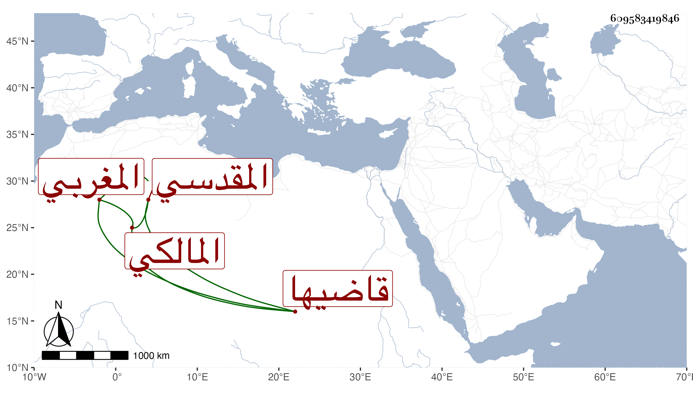

0902Sakhawi.DawLamic.ITO20230111-ara1.EIS1600.609583419846
Biography ID: 609583419846
1029
محمد بن أحمد بن سليمان بن أحمد بن عمر بن عبد الرحمن الشمس بن الشهاب المغربي الأصل المقدسي المالكي قاضيها وابن قاضيها الماضي ووالد المحب محمد الآتي وخال الكمال بن أبي شريف . ولد سنة خمس وتسعين وسبعمائة ، وكان عريا من العلم ، ولي القضاء مدة ثم صرف فكمد على نفسه . ومات في ذي الحجة سنة اثنتين وأربعين . ذكره ابن أبي عذيبة في أبيه .
